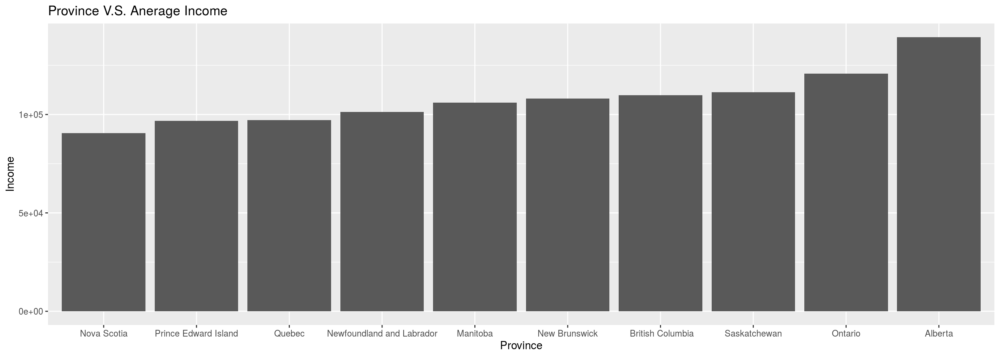

Introduction
Gender inequality is one of the many social problems that our modern society still not able to resolve. It is necessary for us to find out what factors are related to this problem so that we may eventually get rid of this issue. I start with a hypothesis that this problem can be eased by the growth of modern technology industry like software engineering and data mining which usually concentrate in big cities with higher incomes. By investigate the CES 2019 Phone survey data, the result shows another. Apart from the outlier, Alberta, the data for other provinces show a trend that with higher average income comes with the bigger gaps between genders.
# clean the data
# q3 gender
# q4 province
# q69 income
ces2019 <-
ces2019_phone %>%
filter(q69 > 1000)
ces2019<-ces2019[(ces2019$q3==1 || ces2019$q3==2),]
ces2019<-ces2019[!(ces2019$q3==3),]
ces2019 <-
ces2019 %>%
select(q3, q4, q69)
ces2019_male <-
ces2019 %>%
filter(q3 == 1)
ces2019_female <-
ces2019 %>%
filter(q3 == 2)# create male and female dataframe by provinces
ces2019_male_province = ces2019_male %>% group_by(q4)
ces2019_female_province = ces2019_female %>% group_by(q4)
ces2019_gender_province = ces2019 %>% group_by(q3, q4)
ces2019_province = ces2019 %>% group_by(q4)# get the means
gender_province_average = ces2019_gender_province %>% summarise(
q69 = mean(q69)
)
## `summarise()` regrouping output by 'q3' (override with `.groups` argument)
gender_province_average = gender_province_average[order(gender_province_average$q4),]
province_average = ces2019_province %>% summarise(
q69 = mean(q69)
)
## `summarise()` ungrouping output (override with `.groups` argument)
province_average = province_average %>% rename(avg_income=q69)
keeps <- c("q4", "q69")
male_province_average <-
gender_province_average %>%
filter(q3 == 1)
male_province_average = male_province_average[keeps]
male_province_average = male_province_average %>% rename(male_income=q69)
female_province_average <-
gender_province_average %>%
filter(q3 == 2)
female_province_average = female_province_average[keeps]
female_province_average = female_province_average %>% rename(female_income=q69)
# merger male, female and overall data bacek to a single dataframe
gender_province_average = merge(male_province_average, female_province_average, by='q4')
gender_province_average = merge(gender_province_average, province_average, by='q4')
gender_province_average$diff_amount = gender_province_average$male_income - gender_province_average$female_income
gender_province_average$diff_percent = gender_province_average$diff_amount / gender_province_average$female_income
# Put the provinces back
provinces<-c("Newfoundland and Labrador", "Prince Edward Island", "Nova Scotia", "New Brunswick", "Quebec", "Ontario", "Manitoba", "Saskatchewan", "Alberta", " British Columbia")
gender_province_average$province<-provinces
province_average$province<-provincesggplot(data=province_average, aes(x=reorder(province, avg_income), y=avg_income)) +
geom_bar(stat="identity") +
labs(x = "Province",
y = "Income",
title = "Province V.S. Anerage Income")
R Markdown
This is an R Markdown document. Markdown is a simple formatting syntax for authoring HTML, PDF, and MS Word documents. For more details on using R Markdown see http://rmarkdown.rstudio.com.
You can embed an R code chunk like this:
summary(cars)
## speed dist
## Min. : 4.0 Min. : 2.00
## 1st Qu.:12.0 1st Qu.: 26.00
## Median :15.0 Median : 36.00
## Mean :15.4 Mean : 42.98
## 3rd Qu.:19.0 3rd Qu.: 56.00
## Max. :25.0 Max. :120.00
fit <- lm(dist ~ speed, data = cars)
fit
##
## Call:
## lm(formula = dist ~ speed, data = cars)
##
## Coefficients:
## (Intercept) speed
## -17.579 3.932Including Plots
You can also embed plots. See Figure 1 for example:
par(mar = c(0, 1, 0, 1))
pie(
c(280, 60, 20),
c('Sky', 'Sunny side of pyramid', 'Shady side of pyramid'),
col = c('#0292D8', '#F7EA39', '#C4B632'),
init.angle = -50, border = NA
)
Figure 1: A fancy pie chart.